SW-II
活動 CRM 操作手冊
工作人員後台・六種身分適用
這本手冊說明後台每一頁怎麼用，以及每種身分能做哪些事。
每個章節開頭都有「適用身分」標籤，只要看自己身分的部分就好。
| 後台網址 | https://crm.sw-ii.com/admin/ |
| 學員報名網址 | https://crm.sw-ii.com |
| 手冊對應版本 | v20261124-14 |
| 最後更新 | 2026 年 11 月 25 日 |
| 製作日期 | 2026 年 11 月 15 日 |
※ 手冊裡的畫面都來自「展示版」，人名與電話都是假資料。展示版右上角會多一個「展示模式」與身分切換選單，正式站沒有。
目錄
- 登入與畫面介紹
- 權限怎麼算
- 總覽
- 建立與編輯活動／課程
- 分享報名連結（QR Code、LINE）
- 報名名單與繳費登記
- 現場報到
- 指派志工
- 會員資料
- 總管理功能與可個別開放的功能（標籤、LINE 訊息、週報、使用者…）
- 常見問題
一張圖看懂：一場活動從開始到結束
建立活動 ──▶ 分享報名連結 ──▶ 學員用 LINE 報名 ──▶ 名單（登記繳費）──▶ 現場報到 ──▶ 活動結束
（第 4 章） （第 5 章） （學員自己操作） （第 6 章） （第 7 章）
│
人手不夠？指派志工幫忙看名單、報到（第 8 章）─┘
名詞小辭典
| 名詞 | 意思 |
|---|
| 單位 | 晁人、維諦、心理道三個單位。每場活動屬於一個「主辦單位」，權限是依單位分開算的。 |
| 場次 | 同一個活動可以有好幾個時段（例如上午場、下午場），共用一張報名 QR Code，學員可以複選。 |
| 個資遮罩 | 手機中間打星號、地址與身分證部分隱藏、生日只顯示「幾月幾日」，保護會員隱私。 |
| 區域範圍 | 有些工作人員只負責某幾區（例如桃區）。有設範圍的人，三個單位的名單、報到、繳費、會員資料都只看得到那幾區的會員。 |
| 標籤 | 貼在會員身上的分類，例如「冥想」「萬聖心派對」。報到、課程繳費時系統會自動貼。 |
1. 登入與畫面介紹
適用身分全部
怎麼登入
- 打開 https://crm.sw-ii.com/admin/。
- 輸入總管理寄給你的 Email 和密碼。第一次登入要先點邀請信裡的連結設定密碼。
- 忘記密碼：請總管理在「使用者」頁按「重設密碼連結」，再傳給你。
畫面分成三塊
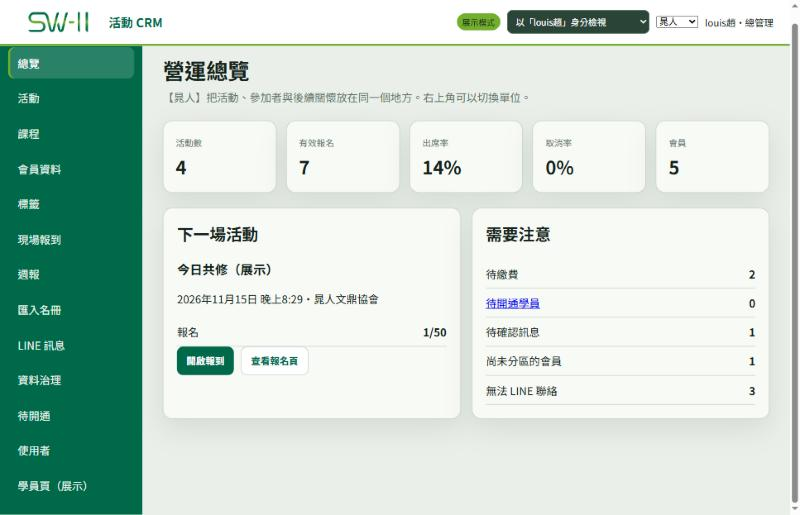
圖 1 後台畫面（總管理看到的樣子）
| 位置 | 用途 |
|---|
| 左側選單 | 切換功能頁。每種身分看到的選單不一樣，看不到的就是沒有權限（見第 2 章）。 |
| 右上角單位選單 | 顯示「晁人」的那個下拉選單。你屬於好幾個單位時，用它切換現在要管哪個單位。 |
| 右上角姓名與登出 | 顯示你的名字（有區域範圍的會一起顯示，例如「工作人員（桃區）」）；用完公用電腦記得按「登出」。 |
小提醒：同一個人在不同單位可以勾不同的權限。例如在晁人能建活動、在維諦只能看名單，切換單位後能做的事會跟著變。
2. 權限怎麼算
適用身分全部
從 2026 年 11 月 20 日起，系統不再用「單位管理者、活動管理者、會計…」這些固定角色，改成總管理替每個人一項一項勾。權限分成三類：
A 單位權限：每個單位分開勾（晁人、維諦、心理道各自一組）
B 全平台權限：勾一次，三個單位都適用
C 只有總管理：刪除活動、永久刪除會員、使用者、資料治理、待開通
＋ 區域範圍：空白＝全部區域；有設＝A、B 的會員相關功能都只限那幾區
A 單位權限（每個單位分開勾）
| 勾選項目 | 勾了可以做什麼 |
|---|
| 報名名單查看 | 看這個單位活動的報名名單（只能看）。 |
| 活動名單匯出 | 名單頁出現「匯出 CSV」按鈕，把名單下載成檔案。 |
| 登記繳費 | 在名單上登記繳費狀態。 |
| 現場報到 | 左側出現「現場報到」，替學員按報到。 |
| 指派志工 | 把某一場活動暫時開放給其他工作人員（第 8 章）。 |
| 活動／課程建立與編輯 | 建立、編輯活動與課程，產報到 QR Code。刪除活動只有總管理能做。 |
B 全平台權限（勾一次，三個單位都適用）
| 勾選項目 | 勾了可以做什麼 |
|---|
| 會員查看 | 左側出現「會員資料」。個資有遮罩，生日只看到「幾月幾日」，看不到出生年和年齡。 |
| 看完整手機 | 手機和緊急聯絡人電話顯示完整號碼（Email、地址仍遮罩）。 |
| 看完整個資（高風險） | 完整手機、Email、地址、生日年份都看得到，也能輸入身分證。只開給極少數人。 |
| 會員資料管理 | 新增、編輯會員資料與匯入名冊。看不到的欄位（例如被遮住的手機）留著不動就會保留原本的資料。 |
| 標籤管理 | 左側出現「標籤」；可以建立標籤、替會員貼標／撕標。 |
| LINE 訊息管理 | 寫 LINE 訊息草稿（任何對象）、核准別人的訊息送出。仍然不能核准自己寫的。 |
| 週報 | 看三個單位合計的成效週報。 |
區域範圍怎麼用：例如某位工作人員範圍設「桃區」，她在三個單位看到的名單、報到、繳費、會員資料、能貼標的對象，都只有桃區的會員。被指派當志工的那一場活動例外，照舊看得到整場。
常見的勾法（參考）
| 工作內容 | 建議勾選 | 左側選單會有 |
|---|
| 辦活動的主力 | 單位：名單、報到、活動（需要時加繳費、匯出） | 總覽、活動、課程、現場報到 |
| 會計 | 單位：名單、匯出、繳費 | 總覽、活動、課程 |
| 區域負責人 | 單位：名單、報到；全平台：會員查看；區域範圍：自己的區 | 總覽、活動、課程、會員資料、現場報到 |
| 只看名單 | 單位：名單 | 總覽、活動、課程 |
注意：活動列表只會列出目前所選單位自己主辦的活動，別的單位的活動不會出現。要看別的單位的活動，請先在右上角切換單位（要有那個單位的身分）。
3. 總覽
適用身分全部
登入後第一個畫面（見圖 1）。上方是目前單位的活動數、有效報名、出席率、取消率、會員數。
- 下一場活動：最近一場活動的報名人數，可以直接按「開啟報到」或「查看報名頁」。
- 需要注意：待繳費人數、待開通學員、待確認訊息、尚未分區的會員、無法用 LINE 聯絡的人數。數字不是 0 時，記得去處理。
4. 建立與編輯免費活動／付費課程
適用身分總管理有勾「活動／課程建立與編輯」的人
「免費活動」和「付費課程」是兩個分開的頁面，操作方式一樣：在「免費活動」頁建的就是免費活動，在「付費課程」頁建的就是付費課程。
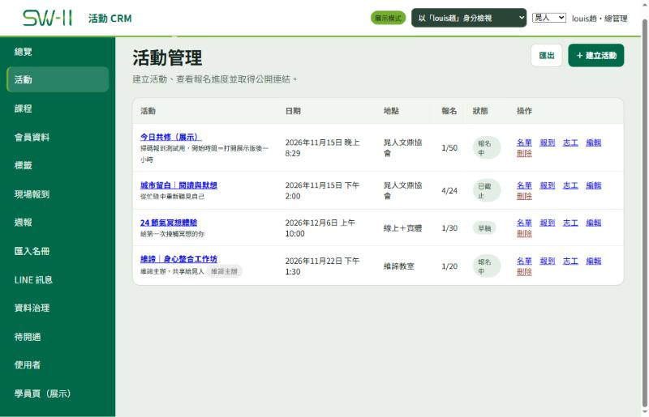
圖 2 活動管理列表：點活動名稱可打開報名頁；右側是名單、報到、志工、編輯、刪除
建立一場活動
- 左側選「免費活動」（或「付費課程」），按右上角「＋ 建立免費活動」。
- 填寫名稱、說明、地點、費用說明、報名截止時間。
- 場次：填開始時間、結束時間、名額。要加第二個時段就按「＋ 新增場次」，所有場次共用一張報名 QR Code。
- 活動 DM 圖片（選填）：上傳 JPG／PNG／WebP，會顯示在報名頁最上方，也會出現在 LINE 分享卡片上。請不要放有學員個資的圖片。
- 選「主辦單位」。（2026-11-22 起已拿掉「共享給其他單位」欄位，活動一律只在主辦單位內部顯示。）
- 「狀態」選「公開報名」後學員才看得到；還在準備就選「草稿（不公開）」。按「儲存」完成。
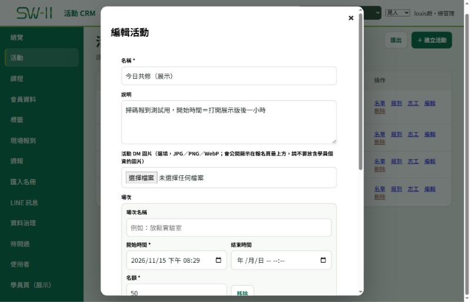
圖 3 編輯活動表單（名稱、說明、DM 圖片、場次）
費用說明怎麼寫：收費的寫金額就好，例如「體驗活動 NT$300」；免費的寫「免費」或留空。免費活動的名單不會出現繳費欄位。
刪除活動：按列表的「刪除」會要求確認，刪除後無法復原。已經有人報名的活動，建議改成取消，不要直接刪除。
匯出多場活動名單
活動列表右上角的「匯出」可以依狀態、關鍵字篩選，一次勾選好幾場，合併成一個 CSV 檔，可以直接用 Excel 開。
活動問卷（取代 Google 表單）
像清明敬祖這類要多問幾題的活動，可以在活動表單最下面打開「報名問卷（選填）」，學員報名時就一起填，不用再另外開 Google 表單。只有單一場次的活動可以用。
- 按「＋ 新增題目」，選題型：單選、複選、簡答、是／否。單選、複選的選項一行寫一個。
- 「誰要回答」只有每筆報名答一次（由報名人回答）。2026-11-23 起已拿掉「每人各答」；以前設成每人各答的舊題目，重新存檔後也會改成每筆報名答一次。
- 「顯示條件」：上一題是單選或是／否時，這一題下面會出現「只有在上一題選到下面這個答案時，才問這一題」。打勾後從下拉選單選答案就好（選項直接帶上一題的選項，不用自己打字）。例如交通選「自行前往（共乘）」才問「同車人姓名」。
- 要辦保險就勾「投保資料（每人出生日期＋身分證必填）」，報名時會要出生日期與身分證字號；勾「緊急聯絡人必填」會多問緊急聯絡人姓名、關係、電話（存在會員資料，下次自動帶出）。
- 題目可以用 ↑ ↓ 調整順序；已經有人回答之後，盡量不要刪題或改選項文字，舊答案會對不上。
金額只記選項，不算錢：像「台中高鐵站（車資 400）」「贊助會員（年費 200）」只會記下學員選了什麼，實際收費仍照原本的繳費登記。
看答案：名單頁每一題會多一欄；上方「依答案篩選」可以只看選某個答案的人（例如所有搭高鐵的人），旁邊括號是人數。「匯出 CSV」會多出每題答案、與報名人關係、緊急聯絡人。
投保名單：有勾投保資料的活動，名單頁會多一個「投保名單」按鈕，下載含完整身分證字號的保險用名單（只有可看完整個資料的人看得到，下載會留紀錄）。缺生日或身分證的人在最後一欄標「資料缺漏」。
幫家人一起報名
2026-11-22 起，活動設定已拿掉「最多可幫幾位家人報名」欄位，新活動不開放幫家人報名。之前已經開放的活動照舊，學員報名時仍會看到「＋ 加一位家人」，規則如下：
- 每位家人要填姓名、關係、性別；要投保時還要出生日期與身分證字號。手機選填。
- 報名人要勾「已取得家人同意」才能送出。
- 每位家人都會各自建一筆會員資料，報到時各自掃碼；名單上會排在報名人下面，標示「家人・關係（由誰報名）」。
- 已經報名的人可以按「修改問卷／加報家人」改答案或再加家人。家人要取消請洽工作人員。
待合併：家人的手機、身分證，或姓名＋生日和既有會員相同時，系統不會自動合併，而是在會員名字旁標「待合併」。請總管理打開這位會員確認，處理後在「編輯資料」勾「已確認處理，清除這個提醒」。
5. 分享報名連結（QR Code、LINE）
適用身分總管理有勾「活動／課程建立與編輯」的人
在活動列表點活動名稱，就會打開這場活動的報名頁。左邊「活動資訊」下方有報名 QR Code 和報名網址。
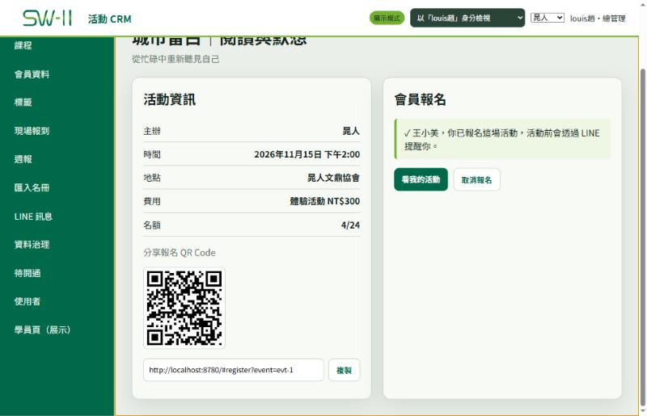
圖 4 報名頁：QR Code 可以印在海報上；按「複製」取得要貼到 LINE 的連結
貼到 LINE 群組的步驟
- 按網址旁邊的「複製」。
- 到 LINE 貼上。對話框會出現一張預覽卡片，顯示活動名稱、日期、地點和 DM 圖。
正式站複製到的網址長這樣：https://crm.sw-ii.com/e/活動代碼/
├─ LINE 的預覽卡片 → 顯示活動名稱、日期、DM
└─ 學員點開 → 自動跳到報名頁
剛建好的活動要等 10～20 分鐘：系統每 10 分鐘更新一次分享卡片。太早複製的話，畫面會提醒「分享卡片還在產生」。這時連結一樣能報名，只是 LINE 卡片暫時只顯示通用標題，等一下再貼就好。改過活動名稱或 DM 也一樣要等一下。
展示版不一樣：展示版（圖 4）複製到的是一般報名網址，沒有分享卡片，這是正常的。
6. 報名名單與繳費登記
適用身分總管理有勾「報名名單查看」的人有區域範圍的人只看自己的區
在活動列表按「名單」打開。上方顯示已報到、未報到、已取消、已繳費人數。
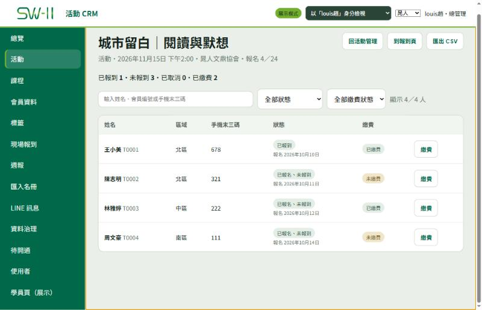
圖 5 報名名單：可用姓名、會員編號或手機末三碼搜尋，並依報到狀態、繳費狀態篩選
登記繳費狀態
可以登記總管理有勾「登記繳費」的人（有區域範圍的只限自己的區）
- 在那位學員那一列按「繳費」。
- 選擇繳費狀態，按「儲存」。
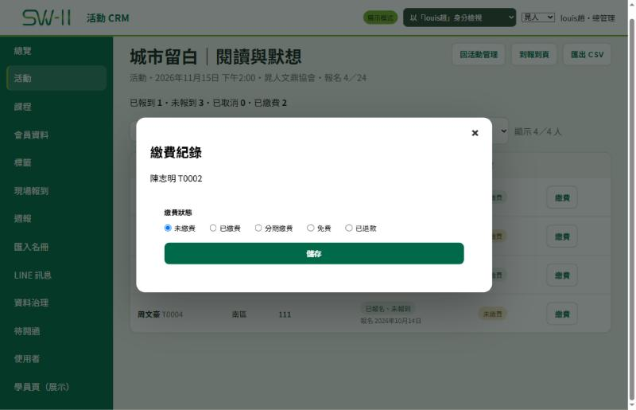
圖 6 繳費紀錄視窗：只需要選狀態
| 狀態 | 什麼時候選 | 系統會怎麼算 |
|---|
| 未繳費 | 報名了還沒付款（預設值） | 總覽「待繳費」會算進去 |
| 已繳費 | 全額付清 | 算「已繳費」；課程會自動貼「課程名稱 已繳費」標籤 |
| 分期繳費 | 學員用分期付款 | 和「已繳費」一樣算已繳，也會貼標籤 |
| 免費 | 這位學員不用付費（例如工作人員、貴賓） | 不算待繳 |
| 已退款 | 付過款後退費 | 不算已繳；課程的已繳費標籤會拿掉 |
CRM 只記狀態，不記金額：從 2026-11-15 起，CRM 不再記錄金額、繳費日期和收據號碼，也不做營收統計。金額與收據請用會計的繳費程式處理。以前登記過的舊資料還保留在系統裡，只是畫面上不再顯示。
匯出名單 CSV
可以匯出總管理有勾「活動名單匯出」的人
名單頁右上角按「匯出 CSV」，下載後用 Excel 打開。欄位有：
會員編號、姓名、性別、區域、居住縣市、手機、（Email）、狀態、繳費、報名時間、報到時間
- 手機：總管理、有「看完整個資」或「看完整手機」的人看得到完整號碼，其他人只有末三碼。Email 只有總管理和「看完整個資」看得到。
- 被指派的志工不能匯出。
- 免費活動沒有「繳費」這一欄。
個資保護：匯出的檔案含有會員個資，用完請刪除，不要轉寄到私人信箱或公開群組。
7. 現場報到
適用身分總管理有勾「現場報到」的人（有區域範圍的只限自己的區）被指派的志工
活動當天有兩種報到方式，可以同時使用：
方式一：學員掃 QR Code 自己報到
- 在「現場報到」頁按右上角「報到 QR Code」，把畫面投影出來或印出來。
- 學員用手機掃描，用 LINE 身分確認後就完成報到。
方式二：工作人員幫忙按報到
- 左側選「現場報到」，右上角點活動欄位，直接打活動名稱搜尋，再點選要報到的活動。
- 用姓名或手機末三碼搜尋，按「確認報到」。按過的會變成「已報到 ✓」。
活動結束後：報到資料封存
報到時間結束（活動結束時間再過 2 小時）後，這場活動的報到資料就封存，任何人都不能再改報到狀態：
- 活動選單裡會標「（已結束・封存）」，進「現場報到」時預設選第一場還沒封存的活動。
- 封存的活動仍可以選來看，但每個人只顯示「已報到／未報到」，沒有按鈕，也沒有報到 QR Code。
- 報到時系統自動貼的活動標籤，封存後如果要補貼或修改，請總管理或有「標籤管理」的人到「標籤」頁或會員資料頁手動處理。
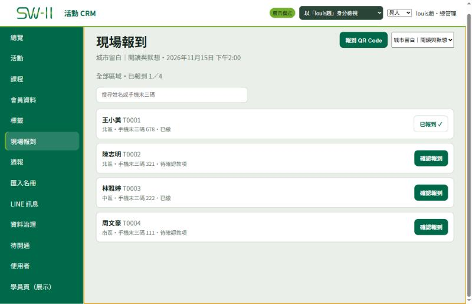
圖 7 現場報到：每一列顯示區域、手機末三碼與繳費狀況（已繳／待確認款項）
報到後自動貼標籤：完成報到的學員會自動貼上活動名稱的標籤，之後可以用來篩選 LINE 推播對象。
8. 指派志工
適用身分總管理有勾「指派志工」的人
活動當天需要別人幫忙時，可以把「某一場活動」暫時開放給一位工作人員。對方只看得到這一場，時間到了權限會自動收回。
- 活動列表按那場活動的「志工」。
- 選擇工作人員（對方要先有帳號，見第 10 章「使用者」）。
- 設定到期時間，預設是活動結束隔天 23:59。
- 勾選要給的權限：看名單（名單頁）或操作報到（報到頁），按「指派」。志工不能匯出名單。
- 不需要了可以按「收回」，馬上停止權限。
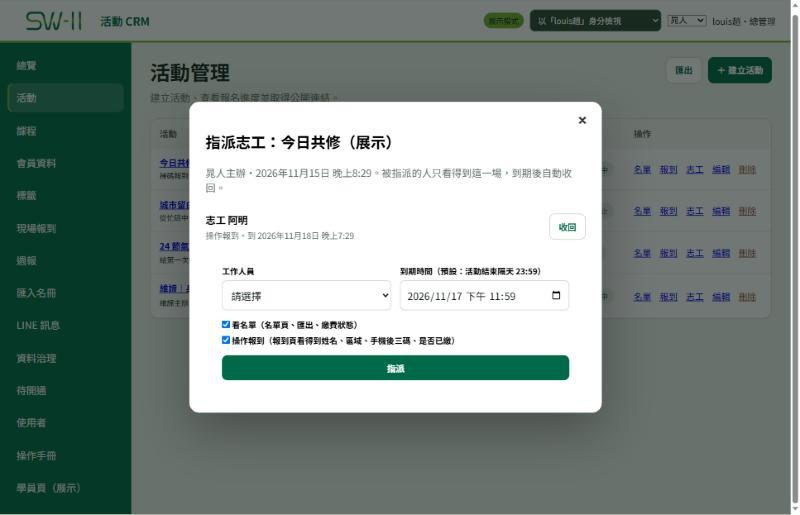
圖 8 指派志工視窗
9. 會員資料
適用身分總管理（完整資料）有勾「會員查看」的人（遮罩；有區域範圍的只看自己的區）
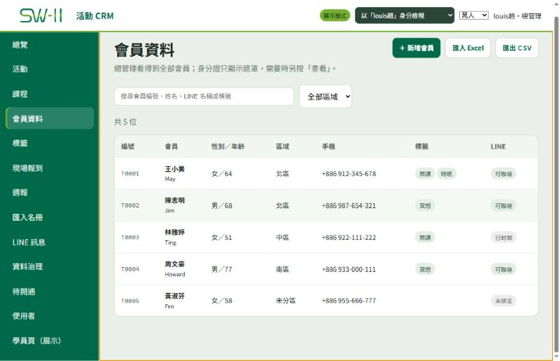
圖 9 會員資料列表（總管理畫面，可新增會員、匯入 Excel、匯出 CSV）
- 搜尋：輸入會員編號、姓名、LINE 名稱或標籤，也可以依區域篩選。
- 排序：搜尋框旁的「排序」選單可以選會員編號、姓名（筆劃）、性別、年齡，都是由小到大；預設依會員編號。沒填的資料排在最後。
- 點會員姓名：打開會員資料頁，看報名紀錄、參加紀錄、標籤。
- 個資遮罩：除了總管理和「看完整個資」的人，手機中間會打星號（勾「看完整手機」的人看得到完整號碼），地址與身分證部分隱藏，生日只顯示幾月幾日。總管理要看身分證，也要另外按「查看」，系統會留下紀錄。
- 新增／編輯會員（有「會員資料管理」的人）：被遮住的欄位不用重打，留著不動就保留原本的資料；沒有完整個資的人看不到身分證欄位。新增會員時手機、出生年月日、居住縣市必填；Email 選填（年長學員多沒有 Email）。編輯舊會員不強制。
- 一支手機只能一位會員：新增、編輯、匯入、學員註冊或申請帳號時，手機已經是別的會員就會被擋下，並提示「這支手機已經是會員了」。請先搜尋這支手機，確認是不是同一個人。家人共用手機時，家人那筆不要填手機。
- 貼標／撕標（總管理與有「標籤管理」的人）：會員資料頁裡按「＋ 增加標籤」，一次最多勾 10 個；按標籤旁的 ✕ 可以撕掉。
- LINE 欄位：「可聯絡」才收得到 LINE 推播；「已封鎖」「未綁定」的人收不到。
- 幫沒有 LINE／沒有 Email 的學員設手機登入（總管理）：在會員資料頁按「學員登入連結」，視窗下方「直接設定手機登入密碼」可由工作人員設一組密碼（預設帶生日：國內民國6碼、海外西元8碼，可改），當面或用紙條告訴學員。之後學員用手機號碼＋這組密碼在登入頁（選「手機」）登入，就能報名、報到、改自己的資料；提醒學員登入後可自行改密碼。
10. 總管理功能（部分可個別開放）
適用身分總管理被個別開放的人
使用者、資料治理、待開通只有總管理能用。標籤、LINE 訊息、週報、匯入名冊可以由總管理在「使用者」頁個別開給工作人員（見第 2 章）。
10-1 標籤
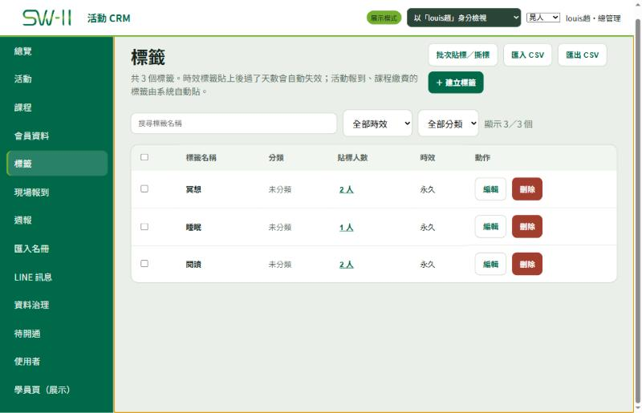
圖 10 標籤管理：建立、編輯、刪除、批次貼標／撕標、匯入與匯出 CSV
- 建立標籤：一行輸入一個，可以一次建很多個，並設定分類與時效（空白＝永久；填天數＝貼上後幾天自動失效）。
- 批次貼標／撕標：貼上一整欄會員編號、手機或姓名，系統會先檢查，確認後才執行。
- 點「貼標人數」：看有哪些人，也可以在那裡撕標。
- 匯出 CSV：欄位是標籤名稱、時效天數、分類、貼標人數。改完可以直接用「匯入 CSV」匯回來。
- 依標籤匯出會員名單（分眾）（只有總管理）：勾選一個或多個標籤，按上方「匯出名單」，選「有任一個標籤」或「這些標籤全部都有」，畫面會先顯示人數，再按「匯出 CSV」。只要一個標籤時，也可以點「貼標人數」後按「匯出名單 CSV」。欄位：會員編號、姓名、性別、區域、居住縣市、手機、LINE 狀態、符合的標籤、全部標籤（可看完整個資的人多一欄 Email）。檔案含個資，用完請刪除；每次匯出都會留紀錄。
- 報到、課程繳費自動貼的是「系統標籤」，請不要手動改名或刪除。
10-2 LINE 訊息
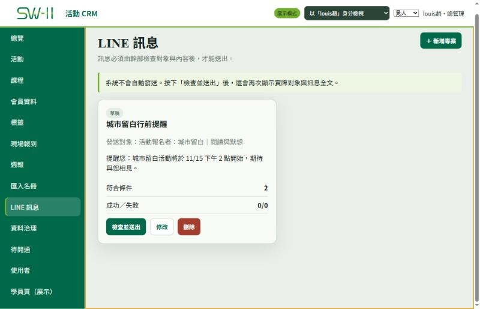
圖 11 LINE 訊息：工作人員寫草稿送審，總管理或核准人員檢查後送出或退回
① 寫草稿 → ② 送審 → ③ 總管理或核准人員檢查對象與全文
③ 之後二選一：核准並送出（發出去）
退回並寫原因 → 作者修改後再送審（回到 ②）
送出後無法收回：「刪除」只會刪掉 CRM 裡的紀錄，學員已經收到的訊息不會消失。訊息裡的網址會自動換成追蹤短網址，用來統計點擊。
總管理
- 按「＋ 新增專案」，輸入主旨、內容，可以附一張圖片。
- 選發送對象：某場活動的報名者、全員、指定學員（可依標籤、區域、姓名篩選），或官方帳號全部好友（群發）。
- 按「檢查並送出」，系統會再顯示一次實際對象與全文，確認後才發送。
- 別人送審的訊息會出現在總覽「待審核 LINE 訊息」，綁過 LINE 的總管理與核准人員也會收到 LINE 通知（點連結用手機瀏覽器開，登入後直接到這頁）：按「核准並送出」或「退回」（退回一定要寫原因）。
有「LINE 訊息管理」權限的工作人員
- 按「＋ 新增專案」，可以選任何單位的活動報名者、全員、指定學員或群發。
- 寫好按「儲存並送審」；還沒寫完可以「先存成草稿」，之後按「送審」。
- 送審後不能改。要改就按「撤回修改」，改完再送審。
- 被退回時卡片會顯示「退回原因」，照著改再送審。核准送出或被退回時，綁過 LINE 的作者也會收到 LINE 通知。
核准別人寫的訊息
- 看得到所有待審訊息，可以「核准並送出」或「退回」；但不能核准自己寫的，要由總管理或另一位核准人員處理。
10-3 週報
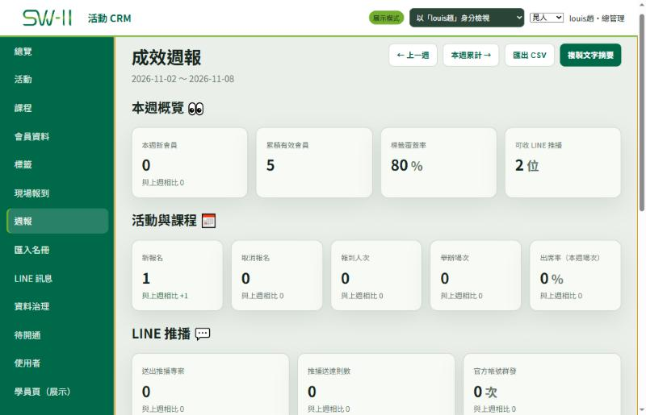
圖 12 成效週報：預設看上一個完整的週，可以切換上一週、本週累計
- 內容：新會員、累積有效會員、標籤覆蓋率、新報名、取消、報到、出席率、LINE 推播的送達、點擊、點擊率、推播帶來的報名。
- 「匯出 CSV」下載完整數字；「複製文字摘要」可以直接貼到 LINE 群組。
- 週報不包含營收，營收請看會計的繳費程式。
- 總管理可以把週報開給工作人員看；看到的是三個單位合計的數字，沒有個人名單。
10-4 使用者（邀請工作人員、勾選權限）
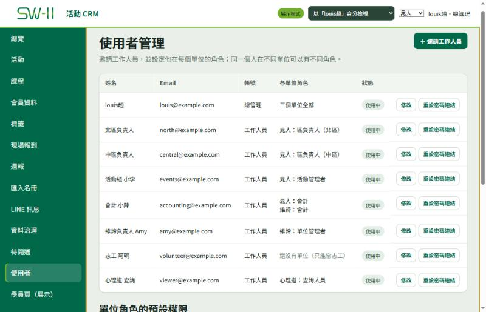
圖 13 使用者管理（畫面為改版前；改版後表頭改為「各單位權限」，並列出全平台權限與區域範圍）
- 按「＋ 邀請工作人員」，輸入姓名與 Email。系統會寄出邀請信，對方點連結設定密碼。
- 帳號類型選「工作人員（依各單位勾選）」。每個單位先勾「屬於這個單位」，再勾 A 類的單位權限（名單、匯出、繳費、報到、志工、活動）。
- 視窗下面的「全平台權限」預設都不勾：會員查看、看完整手機、看完整個資（高風險，只開給極少數人）、會員資料管理、標籤管理、LINE 訊息管理、週報。
- 「區域範圍」選「全部區域」或勾選負責的區；勾了就三個單位都只看那幾區。
- 修改：按那個人的「修改」。忘記密碼：按「重設密碼連結」。
- 刪除工作人員：在修改視窗按「刪除這位工作人員」，要輸入姓名確認。有操作紀錄的帳號會改成停用，紀錄會保留。
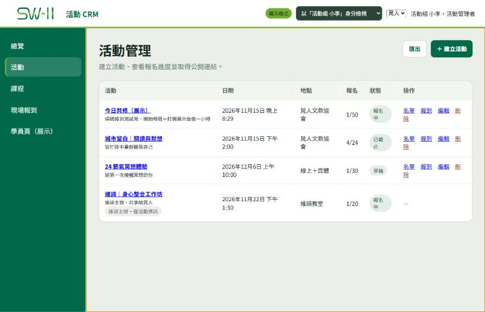
圖 14 同一個活動列表，一般工作人員看到的樣子：選單比較少
10-5 其他
| 頁面 | 用途 |
|---|
| 匯入名冊 | 上傳 Excel 或 CSV，大量新增會員。手機格式看不懂時會留空並提醒，不會整筆擋下。手機已經是其他會員的那一列不會匯入，預覽會標出是哪位會員。
匯入 Google 表單報名：在「（選填）同時報名到活動」選一場活動，系統會自動對應每一題和緊急聯絡人欄位（可以手動改），匯入的人同時報名這場、答案一起存。同一份檔案重複匯入不會多出報名；「新竹縣/市」「離島地區」這種分不出縣市的、對不到選項的答案，會在預覽的「說明」欄列出來，請人工補。 |
| 待開通 | 沒有 LINE 的學員自己申請帳號後，在這裡開通或拒絕。學員註冊與申請時，手機、出生年月日、居住縣市、Email 都必填；手機已經是會員的不能再申請。 |
| 資料治理 | 匯出資料備份、查看最近操作紀錄、把閒置滿兩年的會員匿名化（無法復原，請先預覽名單）。
批次建立手機登入：幫系統裡有手機＋生日、還沒有登入帳號的會員一次建立手機登入，預設密碼用生日（國內民國6碼、海外西元8碼）；已有帳號、沒生日的會略過。匯入名冊時也可勾選「同時建立手機登入」一起做。 |
11. 常見問題
| 問題 | 怎麼辦 |
|---|
| 左側選單少了某個功能 | 你沒有被勾這個權限（見第 2 章）。如果工作需要，請總管理在「使用者」頁調整。 |
| 看不到某場活動或它的名單 | 先確認右上角選的單位對不對。活動列表只列目前單位主辦的活動。 |
| LINE 分享卡片沒有顯示活動名稱 | 新建或剛改過的活動，等 10～20 分鐘再複製、再貼。已經貼過的舊訊息，LINE 可能會一直顯示舊卡片，重新貼一次新的就好。 |
| 分期繳費要記每期金額嗎？ | CRM 只要選「分期繳費」。每期金額與收據請記在會計的繳費程式。 |
| 學員說報名沒成功 | 請學員打開「我的活動」確認；名單頁也可以搜尋他的姓名或手機末三碼。 |
| 報到時找不到學員 | 用手機末三碼搜尋；有區域範圍的人只看得到自己區的學員，找不到的請其他工作人員協助。 |
| 按了沒反應、畫面怪怪的 | 先重新整理頁面。還是不行，截圖並寫下你按了哪個按鈕，傳給總管理。 |
需要協助：帳號、權限、資料錯誤，請聯絡總管理。